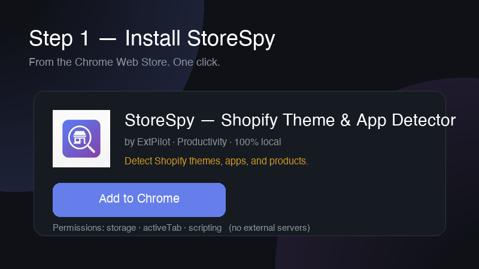
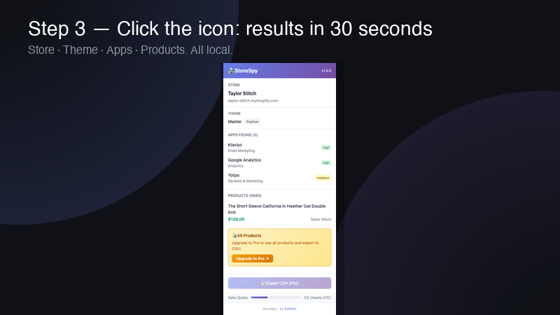
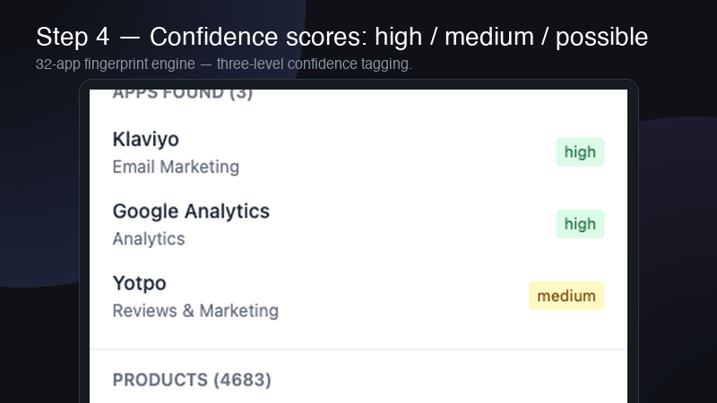
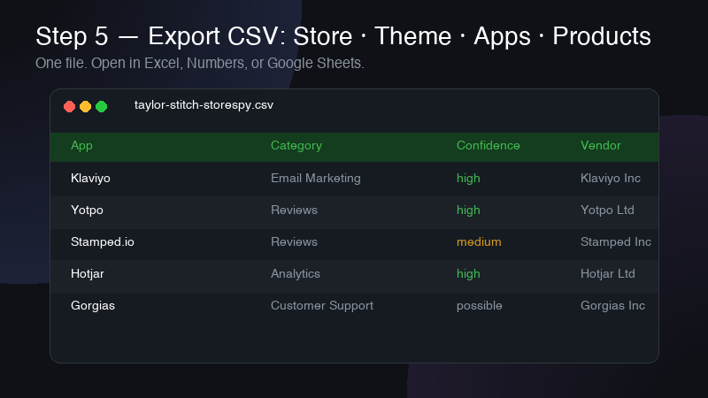

How to Find What Apps a Shopify Store Uses (Free Method, 30 Seconds)
/collections/all.json. StoreSpy recognizes 32 popular Shopify apps including Klaviyo, Loox, Judge.me, PageFly, Recharge, and Gorgias via DOM, script, and style fingerprints. Free users get 3 store analyses per day; Pro ($3.9/month or $14.9 lifetime) unlocks unlimited analyses, all detected apps, the full product list, and CSV export. Unlike Koala Inspector, Store Inspector, or PPSpy — which depend on backend servers — StoreSpy works fully offline once installed, so it never goes down.
Why You'd Want to Know What Apps a Shopify Store Uses
Knowing the apps and theme behind a Shopify store is one of the highest-leverage pieces of competitive intelligence in e-commerce. The same store running Klaviyo + Loox + Recharge tells you a lot about its retention strategy, social proof setup, and subscription motion. Four groups search for this info every day:
- Shopify sellers doing competitor research — you want to see which review app, email tool, and bundle builder the leader in your niche uses before you commit to a 12-month plan.
- Theme and app developers — you need fingerprints of real production stores to size your market and benchmark customization patterns.
- Dropshippers and product researchers — before scaling a winning product, you want to confirm whether the original seller uses Loox reviews, Vitals upsells, or Zipify funnels.
- Agencies and freelancers — before pitching a prospect, you want a 30-second tech audit of their store: theme family, conversion stack, missing essentials.
The good news: every public Shopify store leaks this information through its HTML, scripts, and JavaScript globals. The only question is how fast you want to read those signals.
The Two Methods: Manual Detection vs Browser Extensions
Manual method — view-source plus the JS console
You can identify a Shopify store's stack by hand. Open Chrome DevTools on any storefront and look for these five footprints:
- The
window.Shopifyobject in the JS console — if it exists, the site is Shopify. Expand it to seeShopify.shop,Shopify.theme, andShopify.currency. - Resource URLs starting with
cdn.shopify.comin the Network tab. - A script tag loading
klaviyo.js— that confirms Klaviyo is installed for email and SMS. - A DOM element with id
#loox-reviewsor class.loox-rating— that's the Loox review widget. - Class names prefixed with
.pf-sectionor.pf-id-— that's a PageFly landing page.
The manual method works, but it has hard limits. You can only spot apps you already know the fingerprint for, the console approach misses anything injected lazily after the first paint, and identifying a theme as "Based on Dawn" vs "Refresh" requires reading CSS custom properties by hand. Doing this for ten competitor stores takes an hour. Doing it for a hundred is impossible.
Browser extension method — one click, 30 seconds
A purpose-built browser extension does the same lookups in two seconds and adds three things you can't easily replicate by hand: a continuously maintained fingerprint library, three-way cross-checks (DOM + script + style) for higher confidence, and a Dawn-family classifier that tells you whether a "modern looking" theme is the official Dawn, a Refresh derivative, or a heavily forked custom build.
For the rest of this guide, we'll use StoreSpy — a free Chrome extension that runs the entire analysis locally in your browser. No signup, no cloud upload, no rate limits beyond the daily free quota.
Step-by-Step: Detect Apps with StoreSpy (Free)
Step 1 — Install StoreSpy from the Chrome Web Store
Install StoreSpy from Chrome Web Store. Installation takes about 10 seconds. There is no signup, no email, and no permission to read your browsing history — the extension only activates on Shopify stores you explicitly open.

Step 2 — Open the Shopify store you want to analyze
Navigate to any public Shopify store. StoreSpy detects whether the current tab is a Shopify storefront by checking for window.Shopify and Shopify CDN resources. If the page isn't a Shopify store, the popup tells you so — you'll never get garbage results from a non-Shopify site.
Step 3 — Click the StoreSpy icon
Click the StoreSpy icon in the Chrome toolbar. The popup opens, runs the four-dimension analysis (Store, Theme, Apps, Products), and returns results in roughly two seconds. Free users see a quota counter at the top: 3 analyses per day, resetting at UTC 0:00.

Step 4 — Read the results (Store / Theme / Apps / Products)
The popup is organized into four sections. Store name and myshopify domain at the top. Theme classification underneath (one of Custom, Based on Dawn, Official Dawn, Refresh, or Sense). Detected apps with a colored dot per row indicating confidence: green (high), yellow (medium), gray (possible). The real Products total is read from /collections/all.json — if the store has more than 750 products, the count is shown as 750+.

Step 5 — (Optional) Export to CSV for offline analysis (Pro)
Pro users see an Export CSV button at the bottom of the popup. One click and you get a CSV file with the full analysis: Store header, Theme row, every detected app with its confidence level, and up to 750 sampled products (title, price, vendor, created_at). This is what you want when comparing twenty stores side by side in a spreadsheet.

What StoreSpy Detects (4 Dimensions)
Store info
Store name plus the canonical myshopify subdomain. StoreSpy uses a five-layer fallback to recover the store name even on heavily customized themes that strip window.Shopify.shop: it tries the Shopify object first, then product vendor, then the Open Graph site name, then the page title, then a clean version of the hostname. You almost never see a blank "Unknown Store" result.
Theme (with Dawn lineage classification)
Shopify themes since 2021 mostly trace back to Dawn, Shopify's free reference theme. StoreSpy reads CSS custom properties and class prefixes to bucket the current theme into one of five families: Custom, Based on Dawn, Official Dawn, Refresh, or Sense. If you're a theme developer, this tells you what your competition is built on. If you're a buyer, it tells you whether the store paid for a premium theme or shipped with the free baseline. Read more on the Dawn theme family in our deep-dive post.
Apps (32 fingerprints, three confidence levels)
StoreSpy ships with a fingerprint library covering 32 of the most-installed Shopify apps — Klaviyo, Loox, Judge.me, PageFly, Recharge, Gorgias, Vitals, Bold Subscriptions, Stamped, Zipify, and twenty-two more. Each app is identified by a combination of DOM markers, JavaScript globals, script URLs, and CSS classes. Three signals matched gets you green/high confidence; one strong signal gets you yellow/medium; a single weak signal gets gray/possible. Free users see the first 5 apps; Pro shows all detected apps.
Products (real total, not sampled)
This is where StoreSpy beats most competitors. Many Shopify spy tools cap product counts at 250 because they paginate /products.json and stop at the first response. StoreSpy reads products_count directly from the official /collections/all.json endpoint instead, which returns the real total. Free users see the count plus 1 sample product. Pro users get a sampled product list of up to 750 rows.
Free vs Pro — What's Actually Different?
| Feature | Free | Pro |
|---|---|---|
| Daily store analyses | 3 per day | Unlimited |
| Detected apps shown | First 5 | All detected |
| Product list | 1 sample product | Up to 750 rows |
| CSV export | No | Yes |
| Pricing | $0 | $3.9/mo or $14.9 lifetime |
Pro is positioned for the moment you stop browsing one store at a time and start running batches. Pro pricing is intentionally well below the $9–$29/month subscriptions that competitors charge.
Why "100% Local" Matters
Every other major Shopify spy tool routes your queries through a backend. That means three things: the stores you investigate get logged on someone else's server, the tool stops working when their backend goes down, and every analysis takes a round trip to their data center before you see results. StoreSpy is built differently — the fingerprint library, theme classifier, and product fetcher all run inside the extension itself, so the only network call is the optional license check for Pro users. Free users have zero analysis-related network traffic. That's part of ExtPilot's privacy-first browser extensions philosophy: your browsing stays in your browser.
Frequently Asked Questions
Is StoreSpy free to use?
Yes. StoreSpy has a free tier that lets you analyze up to 3 Shopify stores per day at no cost. You'll see the store name, theme, the first 5 detected apps, the real product total, and 1 sample product. Pro ($3.9/month or $14.9 lifetime one-time) removes the daily limit and unlocks all detected apps, the full product list, and CSV export.
Do I need to sign up or create an account?
No. StoreSpy requires zero signup. Install it from the Chrome Web Store and start analyzing stores immediately. There's no email, no account, no login.
Does StoreSpy upload the stores I analyze to a server?
No. StoreSpy is 100% local — all analysis happens inside your browser. The stores you analyze are never sent to any server. The only network call is to verify your Pro license key (Free users have zero network calls related to analysis).
How accurate is the app detection?
StoreSpy recognizes 32 popular Shopify apps using a combination of DOM elements, JavaScript globals, script URLs, and CSS class fingerprints. Each detection comes with a confidence level: high (green) means multiple fingerprints matched, medium (yellow) means one strong fingerprint matched, possible (gray) means a weak signal. Apps that don't have a known fingerprint won't be detected.
Can StoreSpy detect any Shopify store, including custom themes?
Yes for any public-facing Shopify store. For themes, StoreSpy classifies them into Custom, Based on Dawn, Official Dawn, Refresh, or Sense based on CSS variables and class prefix thresholds. Heavily customized themes will show as "Custom" since they no longer match Dawn-family signatures.
How is StoreSpy different from Koala Inspector or PPSpy?
The biggest difference is StoreSpy runs fully locally with no backend dependency, while Koala Inspector and PPSpy rely on cloud servers. This means StoreSpy is faster, doesn't go down when a backend has issues, and never sends the stores you analyze to a third party. StoreSpy is also significantly cheaper — $14.9 lifetime vs $9–$29/month for typical competitors. Read the full Koala Inspector alternative comparison.
What happens to the product list — does it really show all products?
StoreSpy reads the real product total from the store's /collections/all.json endpoint, not via paginated scraping. Free users see the total count plus 1 sample product. Pro users get a sampled product list (up to 750 rows). For stores with more than 750 products, the count shows as "750+" to avoid misleading you.
Does StoreSpy work in Edge or Firefox?
v1.0 ships on the Chrome Web Store only. Edge support is on the roadmap pending validation of the Chrome version. Firefox is not currently planned (Manifest V3 differences).